1.1Convolutions from Scratch
Convolution implemented two ways in numpy, with zero padding in both "same" and "full" modes, and the filter flipped before the sums.
def conv_four_loops(arr, ker, padding = "same"):
ker = np.flip(ker)
H, W = arr.shape
kH, kW = ker.shape
h_pad = (kH-1) // 2
w_pad = (kW-1) // 2
if padding == "same":
pad_arr = np.pad(arr, pad_width = ((h_pad, h_pad), (w_pad, w_pad)))
elif padding == "full":
pad_arr = np.pad(arr, pad_width = ((kH-1,kH-1), (kW-1, kW-1)))
out = np.zeros([pad_arr.shape[0] - kH + 1, pad_arr.shape[1] - kW + 1])
for i_arr in range(out.shape[0]):
for j_arr in range(out.shape[1]):
out_val = 0
for i_ker in range(kH):
for j_ker in range(kW):
out_val += ker[i_ker, j_ker] * pad_arr[i_arr + i_ker, j_arr + j_ker]
out[i_arr, j_arr] = out_val
return outdef conv_two_loops(arr, ker, padding = "same"):
ker = np.flip(ker)
H, W = arr.shape
kH, kW = ker.shape
h_pad = (kH-1) // 2
w_pad = (kW-1) // 2
if padding == "same":
pad_arr = np.pad(arr, pad_width = ((h_pad, h_pad), (w_pad, w_pad)))
elif padding == "full":
pad_arr = np.pad(arr, pad_width = ((kH-1,kH-1), (kW-1, kW-1)))
out = np.zeros([pad_arr.shape[0] - kH + 1, pad_arr.shape[1] - kW + 1])
for i_arr in range(out.shape[0]):
for j_arr in range(out.shape[1]):
out[i_arr, j_arr] = np.sum(ker * pad_arr[i_arr : i_arr + kH, j_arr : j_arr + kW])
return outBoth are compared against scipy.signal.convolve2d on a 638×482 grayscale selfie, over a 9×9 box filter and the two finite difference operators, in both padding modes.
| Kernel | Mode | Implementation | Output shape | max |diff| vs scipy | Time (s) |
|---|---|---|---|---|---|
| 9×9 box | same | scipy | (638, 482) | — | 0.350 |
| 9×9 box | same | four loops | (638, 482) | 1.22e−15 | 3.285 |
| 9×9 box | same | two loops | (638, 482) | 8.88e−16 | 0.474 |
| 9×9 box | full | scipy | (646, 490) | — | 0.021 |
| 9×9 box | full | four loops | (646, 490) | 1.22e−15 | 3.458 |
| 9×9 box | full | two loops | (646, 490) | 8.88e−16 | 0.476 |
| Dx (1×3) | same | scipy | (638, 482) | — | 0.002 |
| Dx (1×3) | same | four loops | (638, 482) | 0.0 | 0.210 |
| Dx (1×3) | same | two loops | (638, 482) | 0.0 | 0.442 |
| Dx (1×3) | full | scipy | (638, 484) | — | 0.002 |
| Dx (1×3) | full | four loops | (638, 484) | 0.0 | 0.223 |
| Dx (1×3) | full | two loops | (638, 484) | 0.0 | 0.474 |
| Dy (3×1) | same | scipy | (638, 482) | — | 0.002 |
| Dy (3×1) | same | four loops | (638, 482) | 0.0 | 0.229 |
| Dy (3×1) | same | two loops | (638, 482) | 0.0 | 0.461 |
| Dy (3×1) | full | scipy | (640, 482) | — | 0.002 |
| Dy (3×1) | full | four loops | (640, 482) | 0.0 | 0.246 |
| Dy (3×1) | full | two loops | (640, 482) | 0.0 | 0.453 |
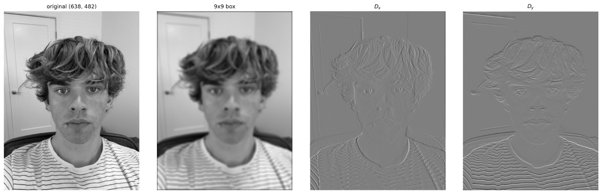
scipy.signal.convolve2d. Left to right: original, 9×9 box, Dx, Dy. All in "same" mode.Runtime
Comments on runtime: for the larger kernel the four loop version is the slowest by far, followed by the two loop version, followed by the scipy version: as the underlying implementation becomes more vectorized, it gets significantly faster (the four loop version is the least vectorized). For the smaller kernel, the four loop version beats the two loop version as it avoids the numpy operations overhead.
Boundaries
Comments on how boundaries are handled: by default, the boundaries are handled identically by my versions and the scipy version, as I set the "mode" parameter of scipy to match my "padding" parameter, and both use zero padding. If you change the "boundary" parameter in scipy to either "symm" or "wrap" instead of "pad", then the output from scipy appears slightly different around the border.
1.2Finite Difference Operator
Dx = [1, 0, −1] and Dy = [1, 0, −1]T applied to cameraman.png, gradient magnitude computed as √(Dx² + Dy²), then binarized at a threshold of 0.1 (0.08 was also tried).
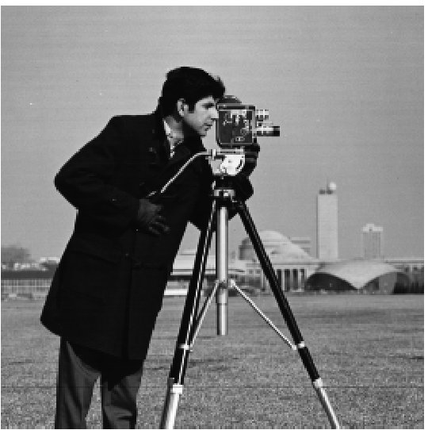
cameraman.png
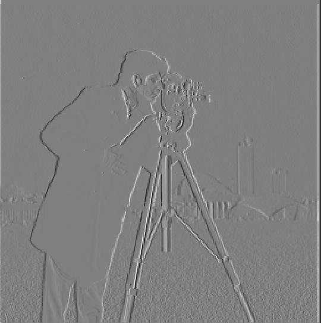
im * Dx
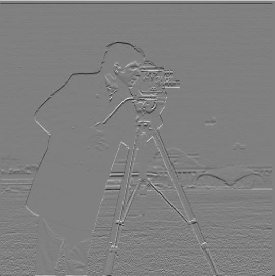
im * Dy
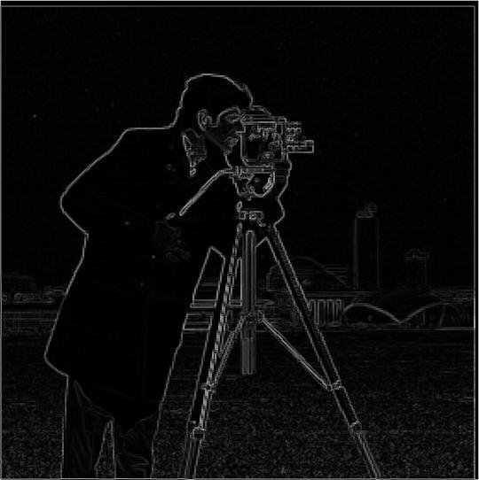
√(Dx² + Dy²)
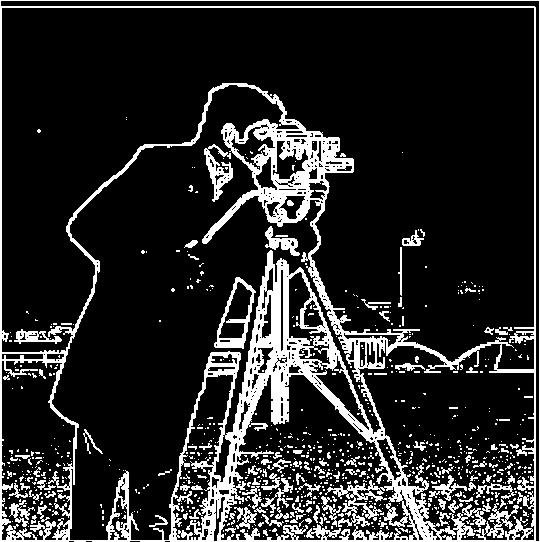
Choosing the threshold
I landed on 0.1 as a middle ground between eliminating more noise towards the bottom of the image and missing some of the edges towards the top of the image
1.3Derivative of Gaussian Filter
A 9×9 Gaussian built with cv2.getGaussianKernel(ksize=9, sigma=0) and an outer product with its transpose. The DoG filters are that Gaussian convolved with Dx and Dy in "full" mode, giving 9×11 and 11×9 filters.
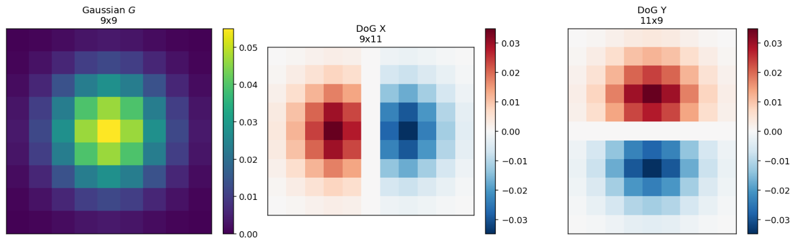
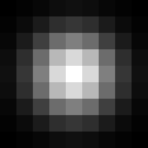
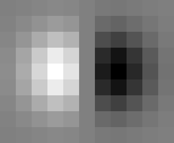
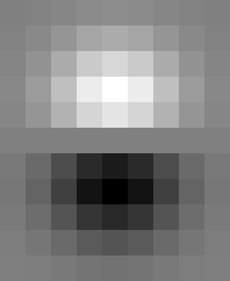
Gaussian smoothing applied to the cameraman
G * im
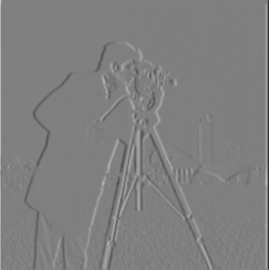
of blurred
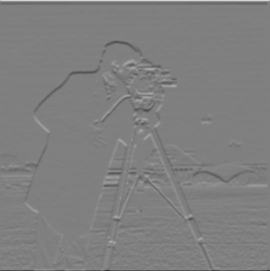
of blurred
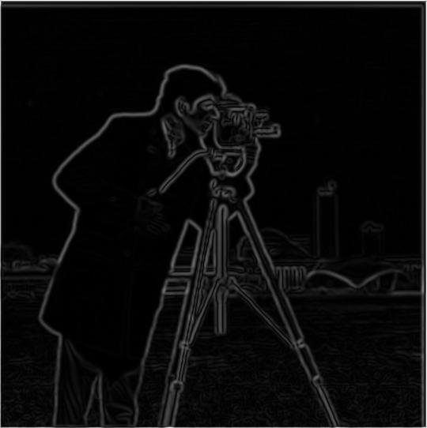
of blurred
gradient magnitude
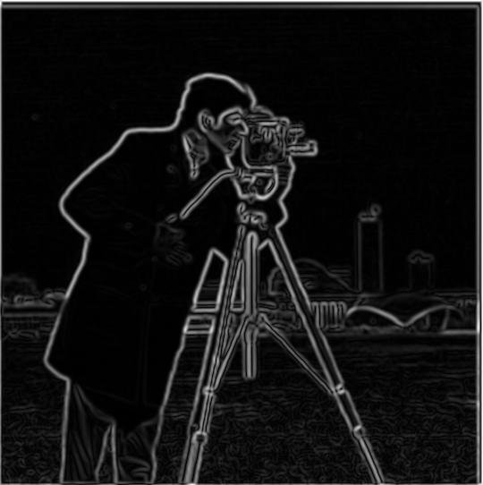
gradient magnitude
Binarized, all three routes
threshold = 0.1
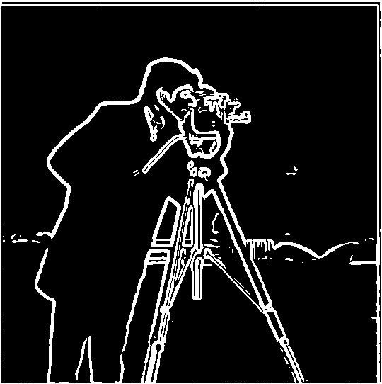
threshold = 0.1
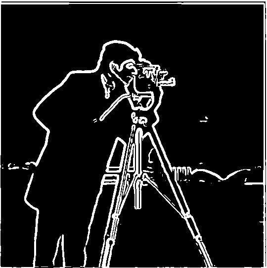
threshold = 0.1
Comments: compared to the finite difference version, using the Gaussian filter produced a much smoother edge detector (the noise in the bottom half of the image no longer appears). This is because the Gaussian is a low pass filter, which removes high frequencies (corresponding to noise) before the derivatives are applied
The images produced by the two DoG implementations are qualitatively identical, with only slight discrepancies near the borders
2.1Image Sharpening
how the unsharp masked filter works: the Guassian blur filter G is a low pass filter: it removes high frequency details. Hence, doing high_freq = im - (G * im) leaves only the high frequency details of im. we can add high_freq back to im to emphasize the high frequencies of im, leaving a "sharpened" image.
Collapsed into the single kernel (1 + α)·δ − α·G. Against the three-step version this agrees to 1.78e−15 on the Taj and 1.55e−15 on the waterfall.
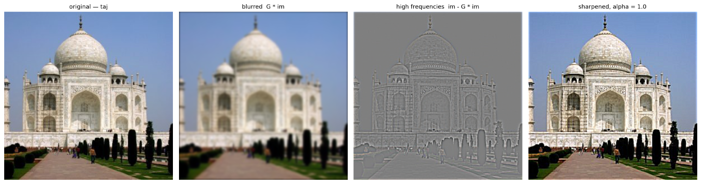
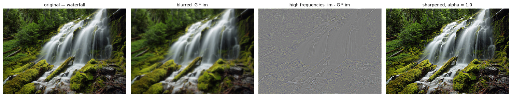
Varying the sharpening amount
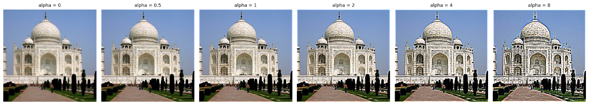
Blurring a sharp image, then re-sharpening
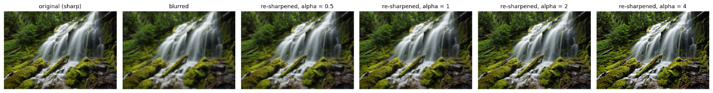
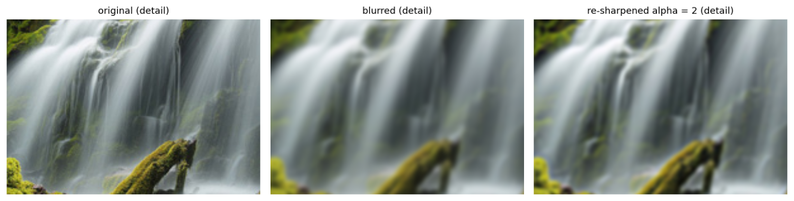
| Image | mean |diff| vs original |
|---|---|
| blurred | 0.0381 |
| re-sharpened, α = 0.5 | 0.0352 |
| re-sharpened, α = 1 | 0.0330 |
| re-sharpened, α = 2 | 0.0315 |
| re-sharpened, α = 4 | 0.0374 |
comment on blurring a sharp image, then trying to resharpen it: across different alphas, the mean absolute difference between the resharpened image and the original image remains high. This is because there is no way to recover the high frequencies that were completely zeroed out by the Guassian low pass filter, no matter how high alpha is. If you keep increasing alpha you are just amplifying noise.
2.2Hybrid Images
Image 1 is high-pass filtered as im1 − G(σ1) * im1, image 2 is low-pass filtered as G(σ2) * im2, and the two are summed. Kernel size is 6σ + 1 in each case. Alignment uses two hand-picked corresponding points per pair.
Derek and Nutmeg
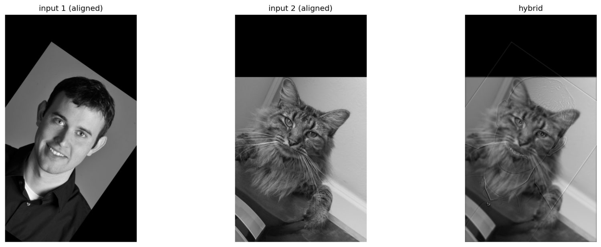
(2, 2): too small
(5, 10): too much human, not enough cat
(3, 3): just right
Ferrari and Lamborghini — full frequency analysis
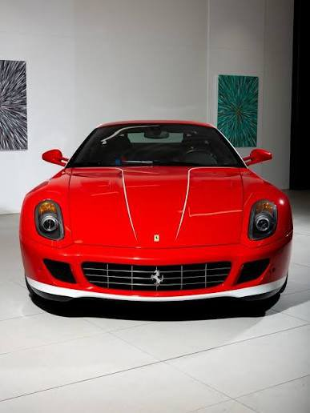
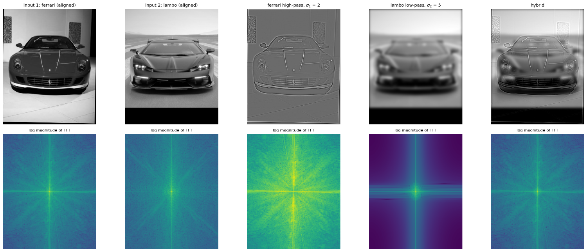
np.log(np.abs(np.fft.fftshift(np.fft.fft2(gray_image)))) of each. σ1 = 2, σ2 = 5.other values tried:
(3, 3): lambo not blurry enough
(3, 6): lambo too blurry
with (2, 5), watch how hte horse logo in the center dissapears at a distance
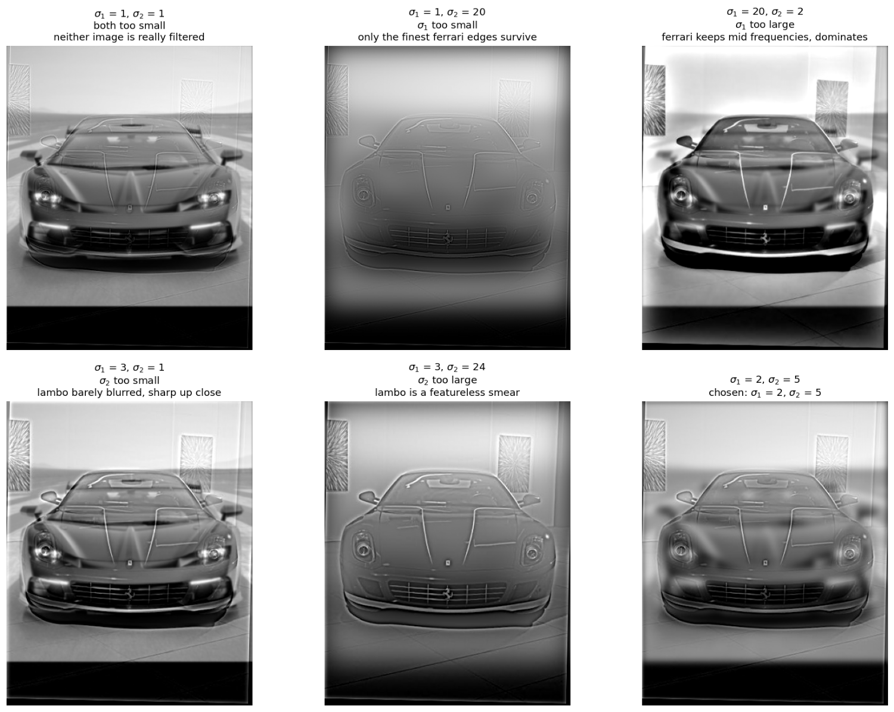
Spider and Jellyfish — failure case
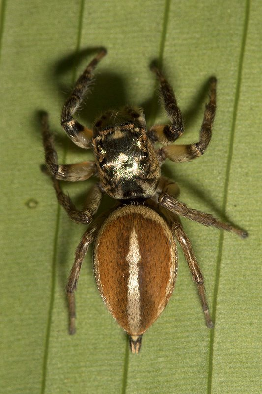
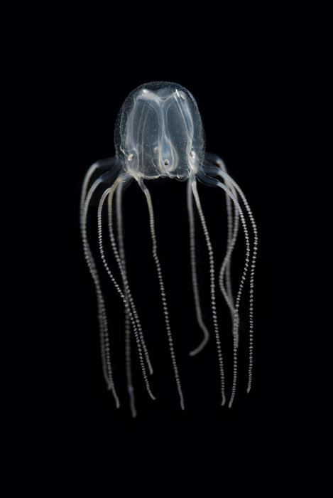
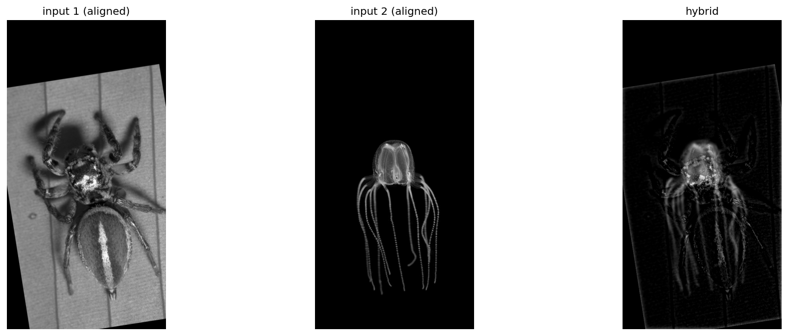
other values tried: (5, 10), (2, 6), (3, 3)
FAILURE CASE: the high contrast in the jellyfish image and the object size variation between the images made this a failure case
2.3Gaussian and Laplacian Stacks
No downsampling — every level keeps the original dimensions. Level 0 of the Gaussian stack is the unblurred image; level i is the original convolved with a Gaussian of σi = σ0·2i−1. The Laplacian levels are successive differences, with the final Gaussian level kept as the residual.
def gauss_stack(im, sigma_0, levels):
out = []
out.append(im)
for i in range(levels - 1):
sigma_i = sigma_0 * (2 ** i)
ker_i = gaussian_kernel(ksize=6 * sigma_i + 1, sigma=sigma_i)
im_i = scipy.signal.convolve2d(im, ker_i, mode = "same")
out.append(im_i)
return np.array(out)def laplace_stack(g_stack):
out = []
for i in range(len(g_stack) - 1):
d = g_stack[i] - g_stack[i + 1]
out.append(d)
out.append(g_stack[-1])
return np.array(out)Reconstruction check — np.abs(sum(laplacian_stack) - original).max() returns 1.11e−16 for every image used below.
Recreating Szeliski Figure 3.42 (a)–(l), with σ0 = 2 and 5 levels:
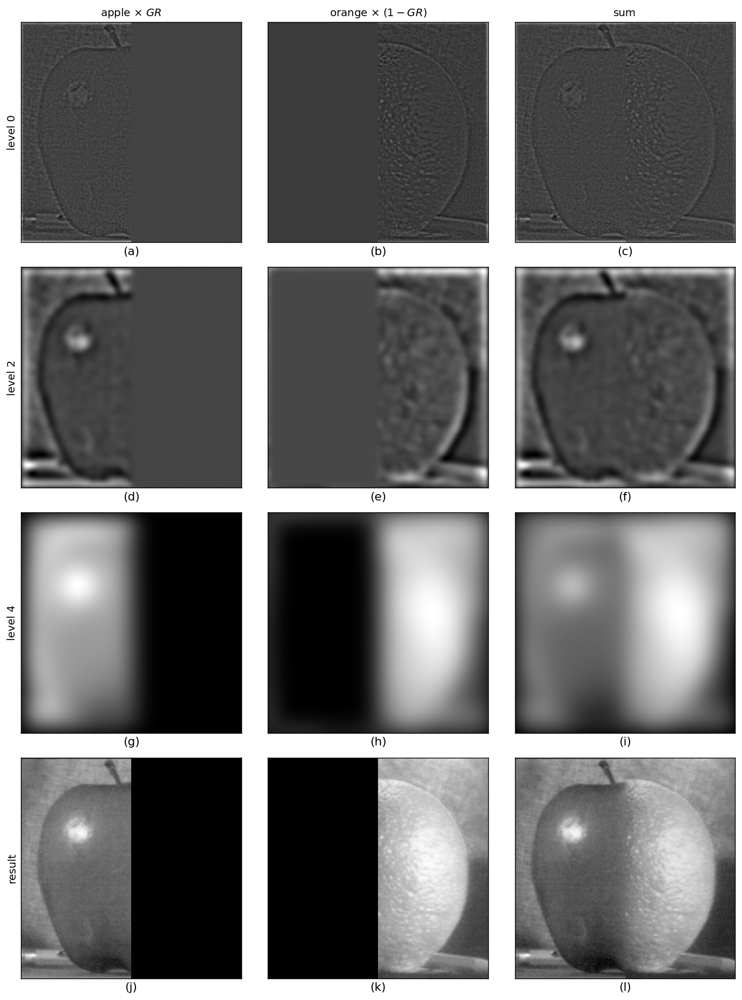
2.4Multiresolution Blending
Following the mask-based algorithm on page 230 of Burt & Adelson: build Laplacian stacks for both images, a Gaussian stack for the binary mask R, then combine level by level as LSl = GRl·LAl + (1 − GRl)·LBl and sum.
def blend(im1, im2, mask, sigma_0, levels):
out_stack = []
gr = gauss_stack(mask, sigma_0, levels)
ga, la = gauss_laplace_stack(im1, sigma_0, levels)
gb, lb = gauss_laplace_stack(im2, sigma_0, levels)
# check if laplace is working (should be ~0)
print(np.abs(sum(la) - im1).max())
print(np.abs(sum(lb) - im2).max())
for i in range(levels):
avg = gr[i] * la[i] + (1 - gr[i]) * lb[i]
out_stack.append(avg)
out_stack = np.array(out_stack)
return np.sum(out_stack, axis=0)The oraple — vertical seam
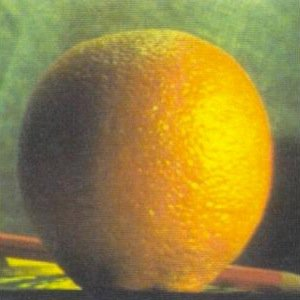
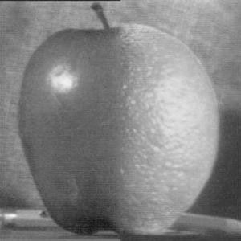
Ocean and lava — irregular mask
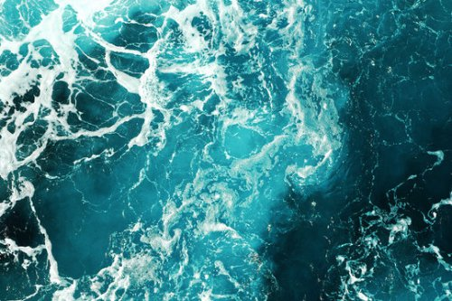
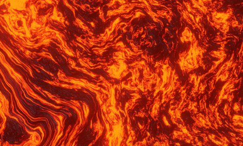
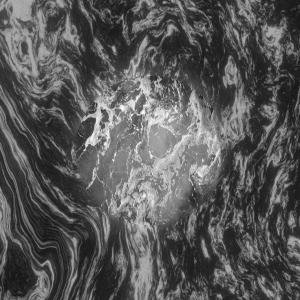
Earth and Mars — irregular mask
Both irregular blends use the same circular mask, built as a binary distance test and left hard-edged; the Gaussian stack does the softening.
def create_circle_mask(h, w, center=None, radius=None):
cy, cx = center if center is not None else (h // 2, w // 2)
r = radius if radius is not None else min(h, w) // 4
rows, cols = np.ogrid[:h, :w]
return ((rows - cy) ** 2 + (cols - cx) ** 2 <= r ** 2).astype(float)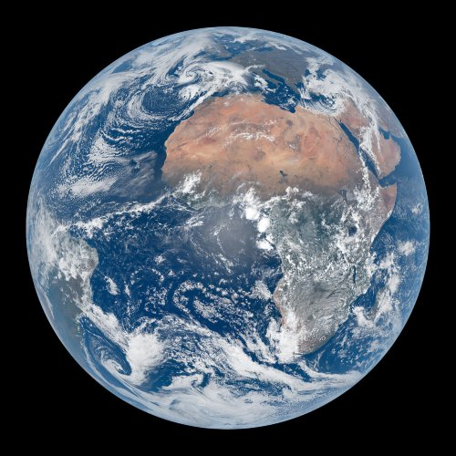
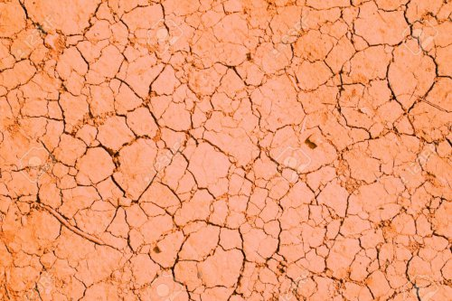
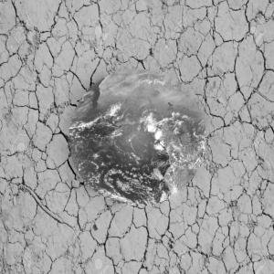
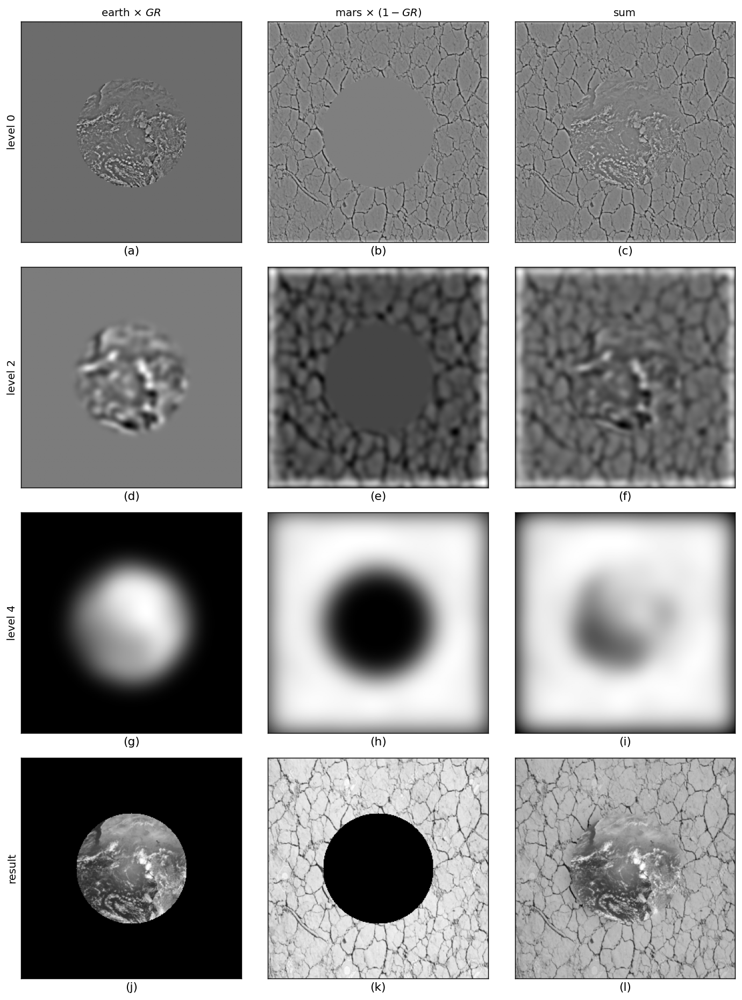
—What I learned
the most important thing I learned was how to isolate and combine different frequencies and semantic aspects of an image, particularly with Gaussian and Laplacian stacks/pyramids!